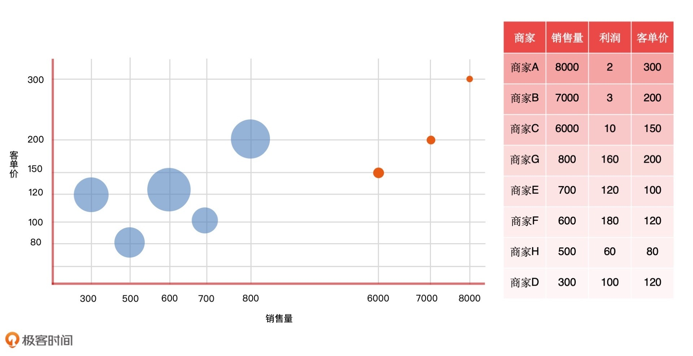
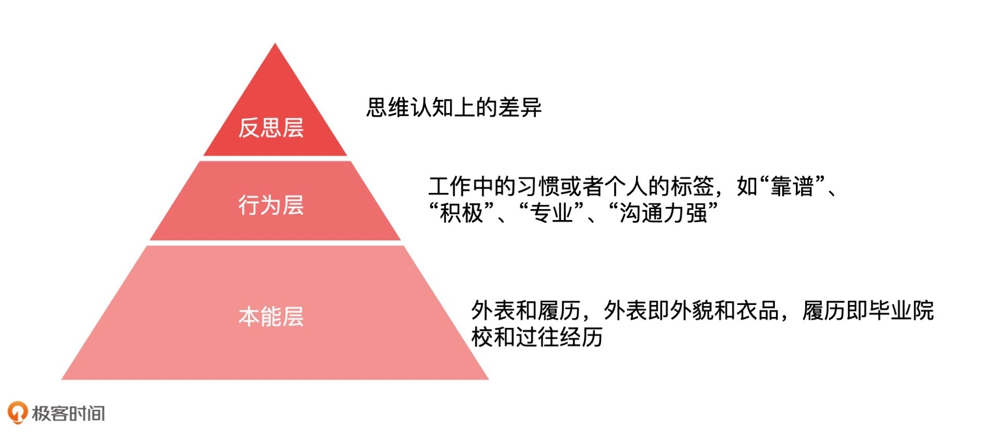

- 00 开篇词 你好，产品经理！你的未来价值壁垒在哪儿？.md.html
- 01 行业视角：产品经理眼中的人工智能.md.html
- 02 个人视角：成为AI产品经理，要先搞定这两个问题.md.html
- 03 技术视角：AI产品经理需要懂的技术全景图.md.html
- 04 过来人讲：成为AI产品经理的两条路径.md.html
- 05 通过一个 AI 产品的落地，掌握产品经理工作全流程.md.html
- 06 AI 模型的构建过程是怎样的？（上）.md.html
- 07 AI模型的构建过程是怎样的（下）.md.html
- 08 算法全景图：AI产品经理必须要懂的算法有哪些？.md.html
- 09 K近邻算法：机器学习入门必学算法.md.html
- 10 线性回归：教你预测，投放多少广告带来的收益最大.md.html
- 11 逻辑回归：如何预测用户是否会购买商品？.md.html
- 12 朴素贝叶斯：让AI告诉你，航班延误险该不该买？.md.html
- 13 决策树与随机森林：如何预测用户会不会违约？.md.html
- 14 支持向量机：怎么预测股票市场的涨与跌？.md.html
- 15 K-means 聚类算法：如何挖掘高价值用户？.md.html
- 16 深度学习：当今最火的机器学习技术，你一定要知道.md.html
- 17 模型评估：从一个失控的项目看优秀的产品经理如何评估AI模型？.md.html
- 18 核心技能：产品经理评估模型需要关注哪些指标？.md.html
- 19 模型性能评估（一）：从信用评分产品看什么是混淆矩阵？.md.html
- 20 模型性能评估（二）：从信用评分产品看什么是KS、AUC？.md.html
- 21 模型性能评估（三）：从股价预测产品看回归算法常用的评估指标.md.html
- 22 模型稳定性评估：如何用PSI来评估信用评分产品的稳定性？.md.html
- 23 模型监控：产品经理如何建设算法模型监控指标体系？.md.html
- 24 推荐类产品（一）：推荐系统产品经理的工作职责与必备技能.md.html
- 25 推荐类产品（二）：从0打造电商个性化推荐系统产品.md.html
- 26 预测类产品（一）：用户复购意向预测的底层逻辑是什么？.md.html
- 27 预测类产品（二）：从0打造一款预测用户复购意向的产品.md.html
- 28 预测类产品（三）：从0打造一款“大白信用评分产品”.md.html
- 29 自然语言处理产品：从0打造一款智能客服产品.md.html
- 30 AI产品经理，你该如何提升自己的价值？.md.html
- 31 AI产品经理面试，这些问题你必须会答！.md.html
- 春节加餐1 用户增长模型：怎么利用AI技术判断新渠道性价比？.md.html
- 春节加餐2 一次答疑，带你回顾模型评估的所有基础概念.md.html
- 期中周测试题 ，你做对了吗？.md.html
- 期中答疑 AI产品经理热门问题答疑合集.md.html
- 结束语 唯一不变的，就是变化本身！.md.html
- 捐赠
30 AI产品经理，你该如何提升自己的价值？
你好，我是海丰。
在平时工作中，产品经理的工作价值其实很难被衡量。因为产品经理既不像技术人员，有算法模型以及工程系统的开发成果，也不像运营人员，有可衡量的运营效果和直接的经济收益。我们能看到的产品经理的产出，只有设计原型和一堆 PRD 文档。这就导致很多时候，产品经理的价值感太低，只是业务部门和研发部门的传话筒，周而复始地“接需求”，把需求转化成 PRD 和原型，再输出给技术部门。
那么，产品经理怎么才能更好地证明自己的价值呢？这节课，我们就来说说AI产品经理的三大能力价值，以及具体的提升方法。
数据能力价值
数据是人工智能产品的基础，所以AI产品经理首先要具备的就是数据能力价值。换句话说就是，AI产品经理要懂得利用数据去构建产品，这包括通过数据分析出业务的含义，以及根据数据制定出业务发展中的关键指标等等。简单来说就是要知道怎么分析数据、理解数据和处理数据。
接下来，我就通过一个例子来详细说说怎么分析数据。
假设，你们公司是一家电商平台，入驻的商家可以在平台上卖货，平台会按照佣金比例进行分成。下图就是你们公司和商家分成的波士顿距阵图（BCG Matrix，波士顿咨询集团规划产品的一种方法，旨在体现企业产品品种以及结构适合市场需求的变化），其中横轴代表商家在平台上的销售量，纵轴代表商家在平台上的平均客单价，圆圈大小代表商家给平台带来的利润高低。

如果我只给你10秒的时间，你能从这张图中分析出来哪些信息呢？
拿到一张图，我们先看它的结构。从右侧的图中，我们可以看到，销售量在 6000 以上的商家只有三家，其余的都是销售量不到 1000 的小商家。如果我们把商家按照头部（销售量 >= 6000）、中部（6000 > 销售量 >= 3000）和尾部（销售量 < 3000 ）进行划分的话，平台的中部商家数量就是零，也就是说平台的中部商家是断层的。显然，这样的商家结构是非常不合理的，不利于平台今后的供应链发展，因为它太过依赖于头部的 TOP 商家了。
接着，我们来看它的盈利。作为一个健康的业务来说，不能单纯地看 GMV，我们也要看业务的盈利能力。从图中我们可以看出，头部高销量的商家给平台带来的利润极低（因为它的代表利润的圆圈很小），因为平台对于这些商家来说并没有议价能力。
通过分析图中的数据，我们可以总结出平台今后的发展策略：巩固头部商家，同时重点扶持中小型商家。与此同时，平台业务发展的关键考核指标，就应该是平台商家向上的跃迁率，以及商家结构的合理性。
知道了什么是数据分析，接下来，咱们再说说什么是理解和处理数据。
理解数据就是理解数据的属性，数据属性是指数据本身的特征，它包括数据类型、数据质量等不同维度的属性。其中，数据类型有图像数据、文本数据和声音数据，不同的数据类型在工人智能技术中有不同的分析方法和建模方法。比如图像数据一般采用卷积神经网络模型进行处理，文本数据一般通过 NLP 技术处理。
数据质量指的是数据的结构化程度、分布情况、异常情况等，不同质量的数据对于 AI 产品的影响还是很大的。
处理数据就是要懂得机器学习模型构建过程中的数据处理流程，产品经理虽然在实际工作中并不参与数据处理，但我更建议你在项目的初期参与数据的评估，因为这项能力对于产品经理来说在目前市场环境下有着非常大的竞争力。
说了这么多，我们到底该怎么提升数据能力价值呢？
提升数据能力价值，我们主要从理解数据和分析数据入手。理解数据需要我们了解，不同 AI 场景下需要什么样的数据准备，这需要你在实践中进行体会。分析数据则需要你掌握一些统计学和数据分析相关的知识，以及一些数据分析工具（如 Python、Tableau），甚至是一些经济学和心理学。
方向找到了，具体的实施途径就非常多了。我比较推荐的是，你去阅读几本相关的书籍，先系统掌握这些知识的结构，再逐一精进各个核心知识点。这里，我推荐以下几本书。
- 《女士品茶——统计学如何变革了科学与生活》：了解统计学必看的入门级图书
- 《独立思考：日常生活中的批判性思维》：批判性思维课程的教科书，从逻辑学、科学方法论等角度介绍正确的思维方法
- 《京东平台数据化运营》：京东平台的实操案例，介绍了如 App、微信手 Q 等无线流量端，关于优化搜索流量以及提升转化率指标的实践方法
- 《机器学习》：是人工智能领域的入门教材，数据分析师可以学到一些必备的算法知识
算法能力价值
接着，我们再来说说产品经理和开发人员的配合过程，看看这个过程中，我们该怎么体现自己的价值。
一般来说，产品经理的工作就是以提需求为主，交付给研发人员 PRD 文档，也就是产品经理制定的目标，然后研发工程师实现这些目标。我们发现，AI产品经理很少参与研发的实现过程。
因此，想在这个过程中提升自己的价值，我认为 AI 产品经理必须要懂算法，至少是浅层机器学习算法，这样才能给算法工程师提出更准确的需求，以及在建模的过程中做好配合工作。具体该怎么做呢？
假设，业务方提出要制作一个用户复购模型，作为AI产品经理，我们可以按照如下的顺序进行思考：
- 确定这个需求的问题分类，比如是分类问题还是回归问题
- 明确解决这类问题有哪些合适的算法
- 在同行业进行对比，确定这个需求问题能实现到什么程度
这其实是一个通用的问题模板，具体的问题你可以不断迭代和细化。那么，搞清楚这些问题后，我们就可以接着和开发人员深入沟通具体的需求。总的来说，良好沟通的前提是你要理解算法。
另外，这么做也能让我们在模型构建出现问题，需要延期或者其他资源支持的时候，利用非技术的语言和公司领导以及客户进行沟通，这更容易获得他们的支持和认可。
包装能力价值
很多人在职场都吃了不会包装自己的亏，比如我下面要说的这两个故事。
第一个故事。我在公司里听研发同学晋升述职的时候，提报部门的同事经常会跟我说，这个研发小哥哥的技术能力很牛的，对部门做了不少贡献，价值观也很正，就是表达能力差一些，不太会说出自己的价值，所以职级的评定可能会受些影响。
第二个故事。几年前，新东方年会上一个魔性视频讽刺了一种现象：公司内很多脚踏实地的人往往会输给拿着 PPT 忽悠管理者的“投机者”。从此之后，“在公司里，做事儿的赶不上写 PPT 的”这句话就火了起来。
我们身边其实还有很多这样的小故事，不会包装吃到的“亏”我相信你也深有体会。我知道，有一部分人对自我能力的包装是有偏见的。事实上，随着市场变化、认知升级，包装能力已经成为了每一个职场人都要掌握的能力，它对产品经理来说更是基本素质。
如果我问你怎么对产品包装，你一下子就能想到，可以用大量的文案和营销手段进行宣传。那么对于个人来说，我们应该怎么包装自己，在公司中树立起个人的品牌呢？
美国认知心理学家诺曼提出的情感化设计理论，将情感体验设计分为三个层次：本能层、行为层、反思层。这个理论运用到个人品牌的包装上同样适用。

首先，本能层指的就是外表，比如，很多人就是冲着苹果或者无印良品的极简主义设计才去购买的产品。我们给人的第一印象就是自己的外表和履历，外表就是外貌和衣品，履历就是毕业院校和过往经历。
我们一定不要回避这个问题，在“颜值即是正义”的时代，让别人了解自己，一定是从给别人留下一个良好的个人形象开始的。
其次是行为层，它指的是你在工作中的习惯或者说你个人的标签，比如“靠谱”、“积极”、“专业”、“沟通力强”……事实上，我们身边总是有同事很容易受到领导和其他同事的喜爱，其实就是行为层在起作用。
当别人从形象开始了解我们之后，紧接着我们就要从行为给自己打上一个“标签”，然后不断地向对的人展示对的标签，这样别人才会认为你是有着这样“标签”的人。然后，当公司领导或者同事、朋友有了合适的机会的时候，第一个想到的就是你。
机会只会留给那些能接得住的人，如果说本能层和行为层是创造机会的过程，反思层就是能让你和其他人拉开差距的一层。这么说感觉有点抽象，我来举个例子。
我平时在工作的时候经常会和很多研发同学打交道，比如作为面试官、作为晋升评审委员、作为需求提出方、作为需求承接方等等。一般在沟通的时候，我就能发现我对面这个人的职业天花板在哪里，比如说他在公司会是一个什么样的定位，不出意外的话，他未来的职业生涯能够到多高的位置，这其实都体现在相互沟通的层次上。
比如说，我经常会问面试者一个问题：“你觉得初中级产品经理和高级产品经理的区别是什么？”这个问题，你也可以想一想。
那如果我们从这三层来思考的话，答案分别是什么呢？
如果从本能层来思考，就是当你达到公司的硬件门槛，懂业务、会沟通、善表达，并且有一定的产品设计想法的时候，你会觉得，初中级产品经理和高级产品经理的区别在于，专业能力深耕的程度不同。
如果从行为层来思考，也就是在本能层的基础上，你善于思考和总结，并且会适当地包装自己，不断地输出和迭代自己的知识和经验。这个时候，你可能会觉得初中级产品经理和高级产品经理的区别在于，对业务规划、产品定位，以及用户把控上的不同。
如果从反思层来思考，也就是当你可以捕捉思维认知上的差异的时候，你可能会觉得初中级产品经理和高级产品经理的区别在于，你所能驾驭、影响的领域或者用户的范围不同。
虽然说，每个人的地位和价值都有着天壤之别，不是一朝一夕能追得上的，但是你的思维、认知和眼界会悄悄影响这一切。说了这么多，其实我想说的就是一句话：埋头做事的时候，别忘了抬头讲故事，我们要学会主动把个人“品牌价值”推送到别人面前。
小结
这节课，我们学习了 AI 产品经理的三大必备能力价值，分别是数据能力价值、算法能力价值，以及包装能力价值。
首先，数据能力价值包括理解数据和分析数据。理解数据就是掌握基于数据构建产品的过程，比如，什么场景需要什么数据进行构建，分析数据就是掌握通过数据分析制定业务发展关键指标的能力。
其次，算法能力价值就是通过对浅层机器学习算法的理解，准确地给算法工程师提出需求，能够做到同频沟通，以及在建模的过程中，通过非技术性表达给领导和客户进行汇报。
最后，包装能力价值具体来说就是：可以定位自己，给自己打标签，可以准确表达自己的产出和价值，以及对业务规划和行业发展有一定深度的思考。
除此之外，我还有些职场心得要送给你，总结起来就是善于思考、执行迅速、事事有回应、件件有着落，且超出预期，以及重视稀缺性。作为一个职场产品经理人，这都是你可以提升的关键点。
如果你只是刚刚踏上产品经理这个岗位的新人，我还有几条额外的建议想要送给你。
要有计划、有积累，在寻求公司价值的同时，要对自己个人未来的价值有追求和计划。
学习一些时间管理四象限，一定要重视重要不紧急的事情，新人不要觉得时间多就随意挥霍，你的价值才能决定你的圈子和你的人脉。
要自己定位自己，不要让别人或你的上级定位你，虽然屁股决定脑袋，但你对自己的定位会决定你屁股的位置。
要善于归纳总结和思考，这慢慢会让你和其他人拉开差距。
对于如何提升自我价值这个话题，你还有什么想聊的吗？期待在留言区看到你的故事，我们下节课见！
© 2019 - 2023 Liangliang Lee. Powered by gin and hexo-theme-book.